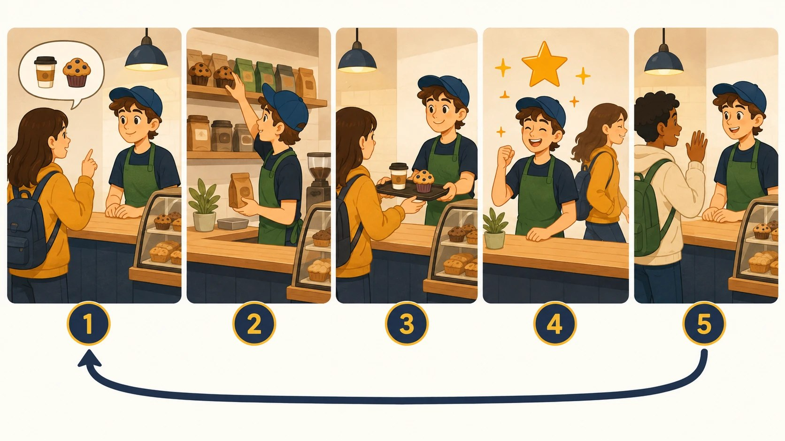
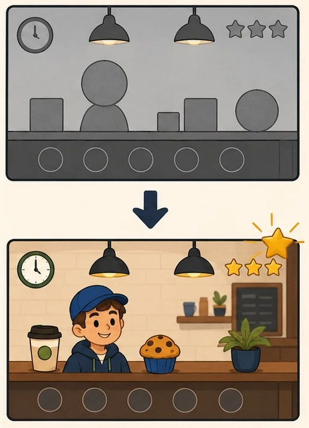
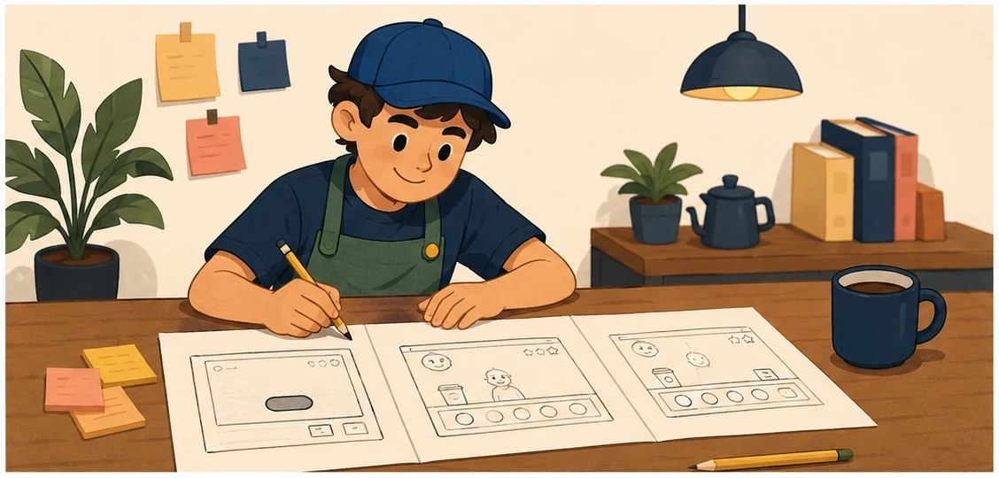
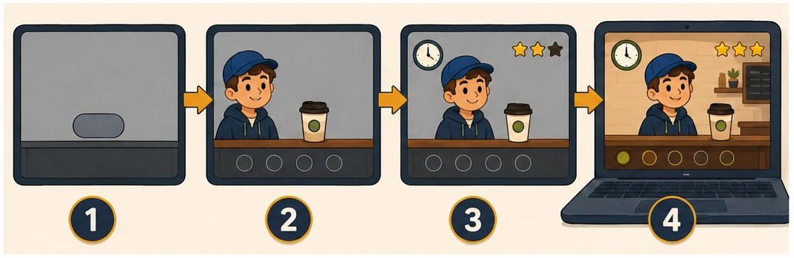

Rakenna Unityssä
Peli ja C#-koodi ovat Unity-projektissa.
Git-repository eli projektin tiedosto- ja versiohistoria sisältää kansiotAssets, Packages ja ProjectSettings.Näyttöprojekti · 17.8.–4.12.2026
Teet koulun kahvilapelin Unityllä ja C#:lla feature kerrallaan. Feature on pelaajalle näkyvä pelin ominaisuus. Järjestys: pelattava kierros, tuotelista, kello ja pisteet, kasvava vaikeus, top 5 -lista. Jokaisen featuren tekniikka arvioidaan näytössä. Projektipäiväkirja kirjoitetaan tälle sivulle.

Lue tämä ennen viikkoa 34
Tässä toteutuksessa et täytä samoja asioita erilliseen Word-pohjaan. Sivuston projektipäiväkirja on projektin suunnitelma, työpäiväkirja ja näyttöaineiston hakemisto.
Peli ja C#-koodi ovat Unity-projektissa.
Git-repository eli projektin tiedosto- ja versiohistoria sisältää kansiotAssets, Packages ja ProjectSettings.Tehtävät ovat GitHubin tehtäväkortteja (issueita). Valmiit muutokset näkyvät pieninä tallennettuina muutoksina (committeina).
Yksi tehtäväkortti = yleensä puolen tai yhden päivän työ.Jokaisen viikon lopussa vastaat kolmeen kysymykseen: mitä ja miten, miksi sekä missä työnäyte on.
Kentät tallentuvat vain tähän selaimeen.Lataa koko projektipäiväkirja jokaisen viikon lopussa ja korvaa repositorion vanha tiedosto.
Tiedosto:project-docs/projektipaivakirja.md. docs-kansio varataan myöhemmin julkaistavalle pelille.Tee kerran projektin alussa
project-docs. Älä luo vielä docs-kansiota.project-docs-kansioon ja tee commit.Vie vastaukset säännöllisesti talteen. Selaimen tallennus ei siirry toiselle laitteelle eikä korvaa Gitissä olevaa työnäytettä.
0 / 15 viikkoa kirjattuPaperinen työpaketti on aikataulu ja tarkistuslista tilanteisiin, joissa sivu ei ole auki. Siihen ei tarvitse kirjoittaa samoja vastauksia uudelleen.
Alkuperäinen Word-pohja on tämän pelipolun lähdeaineisto. Sen aiheet on tuotu sivuston viikkotehtäviin ja projektipäiväkirjaan. Täytä Word-pohja erikseen vain, jos opettaja antaa siitä erillisen palautusohjeen.
Muista: sivuston rastit ja kirjoituskentät ovat oma työmuistisi. Ne tallentuvat vain tähän selaimeen, eivätkä ne siirry opettajalle. Rasti ei ole palautus eikä osa näyttöaineistoa. Rastita vasta, kun työ on testattu ja työnäyte on Git-repositoryssa.
Alkuperäinen asiakastoimeksianto · annettu 17.8.2026
Haluan pienen PC:llä tai selaimessa toimivan pelin, jossa pelaaja työskentelee koulun kahvilassa. Asiakkaita saapuu tiskille ja he tilaavat 1–3 tuotetta. Pelaajan tehtävänä on toimittaa oikea tilaus mahdollisimman nopeasti.
Pelissä pitää olla aloitusvalikko, itse peli, pistelasku ja pelin päättymisnäkymä. Vaikeustason pitää kasvaa pelin edetessä. Pelaajan parhaat tulokset pitää tallentaa.
Tuotteiden tiedot eivät saa olla kovakoodattuna pelilogiikkaan, vaan niiden pitää tulla erillisestä tietolähteestä. Haluan myös nähdä pelistä toimivan version vähintään kerran ennen lopullista versiota, jotta voin pyytää muutoksia.
Lopullinen peli pitää julkaista niin, että voin itse kokeilla sitä.
Sovittu toteutustapa
Unity 2D + C#
CafeGame-scene eli pelin työtilaMenuPanel, GamePanel ja ResultPanelToimeksiannon PC/selaimessa-vaihtoehdosta tässä polussa on valittu selain. Käytä oppilaitoksen määrittämää Unity-versiota koko projektin ajan.
Pidä rajaus
Tee ensin toimiva P0-versio. Verkkomoninpeli, käyttäjätilit, oikeat maksut ja laaja 3D-maailma eivät kuulu tähän projektiin.
Sovi asiakkaan kanssa
Älä keksi vastauksia itse tai tekoälyllä. Merkitse vastaamattomat kohdat avoimiksi.
Mistä hahmot ja taustat?

Väliaikainen grafiikka riittää pitkälle. Rakenna featuret ensin ja vaihda lopullinen grafiikka vasta viimeistelyviikoilla.
Kirjaa käytetyt paketit ja lisenssit README:hen. Tekoälyllä tuotettu grafiikka: kirjaa AI-lokiin ja tarkista lisenssi sekä oppilaitoksen linja.
Pidä punainen lanka näkyvissä
Pelin suunnitteludokumentti
GDD (Game Design Document) on pelialan suunnitteludokumentti. Pohja on esitäytetty toimeksiannosta. Sinä teet omat päätökset ja lataat valmiin gdd.md-tiedoston repositorioosi.
Ajoitus: täytä viikolla 35 aloituskeskustelun jälkeen. Omat päätökset vaativat viikon 34 asiakasvastaukset.

Esitäytetty pohja · tulee mukaan tiedostoon
Koulun kahvilapeli selaimeen: asiakkaita saapuu tiskille, he tilaavat 1–3 tuotetta ja pelaaja toimittaa oikean tilauksen mahdollisimman nopeasti.
Tilaus → valinta → toimitus → pisteet → uusi asiakas.
Unity 2D + C#, tuotteet erillisessä products.json-tiedostossa (TextAsset + JsonUtility), tallennus PlayerPrefsillä, julkaisu Unity WebGL -buildina GitHub Pagesiin.
Ei verkkomoninpeliä, käyttäjätilejä, oikeita maksuja eikä laajaa 3D-maailmaa. Ensin toimiva P0-versio.
Projekti käyntiin
Tämä ei ole erillinen tehtävälista. Samat työvaiheet tehdään viikkokorteissa 34–36. Tee ensin päätökset ja yksi pieni pelattava polku.
Lue toimeksianto. Kirjoita 8 kysymystä ja pidä aloituskeskustelu.
Sovi testiselaimet, pelisäännöt, kohderyhmä, P0-ominaisuudet ja valmis kun -ehdot.
Luo Unity Hubissa 2D-projekti, käynnistä testiscene ja tee WebGL-testibuild. Perusta Git-repository.
Tee backlog, UI-mockup ja jaa koodi selkeisiin vastuisiin.
Tee polku valikosta yhteen tilaukseen, pisteeseen ja pelin loppuun.
Pelipolku
Avaa vain nykyinen viikko. Lue ensin viikon kärki: mitä peliin syntyy ja mitä tekniikkaa opit. Sama tekniikka arvioidaan näytössä. Tee vaiheet järjestyksessä, testaa valmis kun -ehto ja täytä viikon projektipäiväkirja.

Viikot 34–37
Haluan pienen PC:llä tai selaimessa toimivan pelin, jossa pelaaja työskentelee koulun kahvilassa. Asiakkaita saapuu tiskille ja he tilaavat 1–3 tuotetta. Pelaajan tehtävänä on toimittaa oikea tilaus mahdollisimman nopeasti.
Pelissä pitää olla aloitusvalikko, itse peli, pistelasku ja pelin päättymisnäkymä. Vaikeustason pitää kasvaa pelin edetessä. Pelaajan parhaat tulokset pitää tallentaa.
Tuotteiden tiedot eivät saa olla kovakoodattuna pelilogiikkaan, vaan niiden pitää tulla erillisestä tietolähteestä. Haluan myös nähdä pelistä toimivan version vähintään kerran ennen lopullista versiota, jotta voin pyytää muutoksia.
Lopullinen peli pitää julkaista niin, että voin itse kokeilla sitä.
Ohjattu työ Näin etenet
project-docs-kansio. Tee commit, jonka viesti kertoo projektin perustamisesta.Ennen kuin jatkat: toinen henkilö pystyy avaamaan repositoryn ja ymmärtää README:stä, mitä olet tekemässä.
Näytä: asiakastarpeen muistiinpano, repository-linkki, ensimmäinen commit ja testibuild.
Ohjattu työ Näin etenet
Ennen kuin jatkat: asiakas tai ohjaaja hyväksyy P0-rajauksen, mockupin ja ensimmäisen sprintin tehtävät.
Näytä: hyväksytty rajaus, päivätty mockup, tekninen suunnitelma ja backlog.
Ohjattu työ Näin etenet
Ennen kuin jatkat: peli voidaan pelata valikosta tulosruutuun ilman editorin käsin tekemiä väliaskelia.
Näytä: pelattava polku, video tai kuva ja vähintään kaksi testimerkintää.
Ohjattu työ Näin etenet
Ennen kuin jatkat: JSON-tiedoston tuotteen muuttaminen näkyy pelissä ilman ohjelmakoodin muuttamista.
Näytä: JSON-esimerkki, latauslogiikan commit sekä testit tyhjälle ja virheelliselle datalle.
Viikot 38–41
Ohjattu työ Näin etenet
Ennen kuin jatkat: peli loppuu aina vain kerran, pistemäärä on oikein ja uusi peli nollaa tilan.
Näytä: toimiva pelisilmukka, kolme testitapausta ja dokumentoitu bugikorjaus.
Ohjattu työ Näin etenet
Ennen kuin jatkat: vaikeus kasvaa toistettavasti ja käyttöliittymä toimii vain aktiivisessa pelitilassa.
Näytä: vaihtoehtomuistio, vaikeuslogiikan commit ja hyväksytyt testit.
Ohjattu työ Näin etenet
Ennen kuin jatkat: tulos säilyy pelin sulkemisen jälkeen ja rikkinäinen tallennus palautuu turvalliseen oletustilaan.
Näytä: tallennus uudelleenkäynnistyksen jälkeen sekä kirjatut riskit ja ratkaisut.
Ohjattu työ Näin etenet
Ennen kuin jatkat: katselmointilokissa näkyvät osallistujat, palaute, päätös ja hyväksytty seuraava tehtävä.
Näytä: katselmointiloki, palaute, päätetty muutos ja toimiva build.
Vko 42 · 12.–16.10.
Ei projektityötä eikä korvaavia tehtäviä. Jatka viikolla 43 viimeisimmästä toimivasta main-versiosta.
Viikot 43–46
Ohjattu työ Näin etenet
Ennen kuin jatkat: main sisältää testatun palautemuutoksen ja branchin tai pull requestin historia on nähtävissä.
Näytä: issue, branch/merge tai pull request, testit ja katselmointiloki.
Ohjattu työ Näin etenet
Ennen kuin jatkat: uusi käyttäjä ymmärtää tavoitteen ja tärkeimmät toiminnot ilman suullista neuvontaa.
Näytä: ennen/jälkeen-kuvat, vertaispalaute, päätökset ja korjaukset.
Ohjattu työ Näin etenet
Ennen kuin jatkat: kaikki 12 testiä on ajettu ja kolmesta aidosta havainnosta tai erikseen merkitystä vikatehtävästä on täydellinen korjausketju.
Näytä: testausloki, tulokset, bugikorjaukset ja uusintatestit.
Ohjattu työ Näin etenet
Ennen kuin jatkat: refaktorointi ei muuta testituloksia ja katselmointipalautteeseen on vastattu.
Näytä: katselmointimuistio, refaktorointicommit ja rakenteen perustelu.
Viikot 47–49
Ohjattu työ Näin etenet
Ennen kuin jatkat: julkaisuun on vain rajattu korjauslista eikä uusia ominaisuuksia ole avoinna.
Näytä: RC-build, testipalautteet, päätökset ja viimeinen korjauslista.
Ohjattu työ Näin etenet
Ennen kuin jatkat: henkilö, joka ei tunne projektia, pystyy avaamaan ja pelaamaan version 1.0 ohjeen avulla.
Näytä: toimiva julkaisulinkki, v1.0/tagi, käyttöohje ja tunnetut puutteet.
Ohjattu työ Näin etenet
project-docs-kansioon.Valmis: peli, repository, projektipäiväkirja ja näyttöaineisto avautuvat ilman suullista lisäohjetta.
Näytä: peli, repository, project-docs/projektipaivakirja.md, näyttömatriisi, AI-loki ja demo.
Jokainen työskentelykerta
Nyrkkisääntö: jos et pysty selittämään muutosta, työ ei ole vielä valmis.
Laadunvarmistus
Testaus ei ole pelkkää pelaamista. Kirjaa odotettu tulos, havaittu tulos, virheen syy, korjaus ja uusintatesti.
Tekoäly on sallittu apuväline
Saat käyttää tekoälyä ideointiin, selityksiin, virheiden tutkimiseen, testitapausten ehdottamiseen ja tekstin selkeyttämiseen. Jokainen projektiin jäävä ratkaisu on silti sinun vastuullasi.
Selitä omin sanoin, mitä ratkaisu tekee ja miksi se sopii projektiin.
Vertaa dokumentaatioon. Tekoäly voi keksiä olemattomia metodeja.
Aja testit itse. Älä koskaan keksi testituloksia tai palautetta.
Merkitse merkittävä käyttö, omat muutokset ja se, mitä opit.
Oma AI-loki
Huomaa: selaimeen tallentuva loki on työmuisti, ei yksin osa näyttöaineistoa. Se tulee mukaan koko projektipäiväkirjan lataukseen. Voit ladata myös pelkän AI-lokin ja tallentaa sen project-docs-kansioon.
Ei merkintöjä vielä.
Näyttöaineisto
Pelkkä valmis peli ei näytä koko osaamista. Työnäyte on yksi tuotos, joka osoittaa osaamisesi: commit, kuva, testirivi tai muistio. Näyttöaineisto on kaikki työnäytteesi yhdessä. Sama työnäyte voi kelvata useaan kohtaan: esimerkiksi repository ja testibuild todentavat sekä kehitysympäristön että sen käyttöönoton. Kokoa jokaisesta kohdasta linkki, commit, kuva, lokimerkintä tai päätösmuistio.
Opiskelija käyttää kehitysympäristöä
Opiskelija toteuttaa ohjelmiston ohjelmistokomponenttikirjastolla
Viimeinen viikko
Uusia ominaisuuksia ei enää lisätä. Nyt varmistetaan, että osaaminen näkyy.
Paperinen aikataulu
Paperinen paketti auttaa seuraamaan aikataulua ja tarkistamaan näytön vaatimukset. Varsinainen projektipäiväkirja kirjoitetaan tällä sivulla ja viedään repositorion project-docs-kansioon.